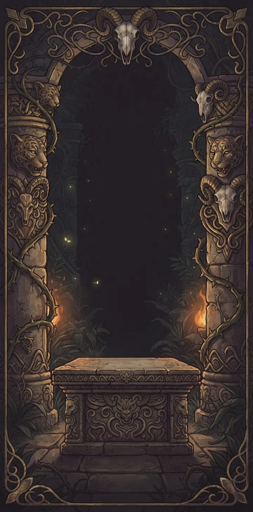
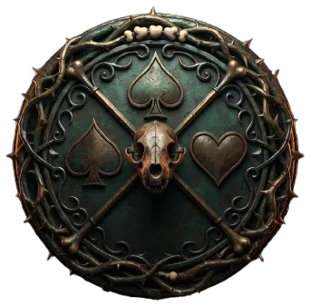
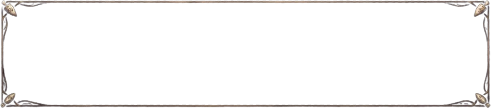
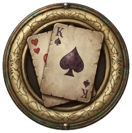
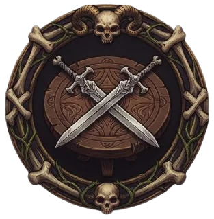
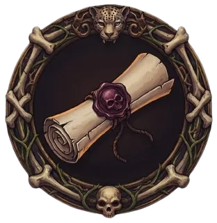
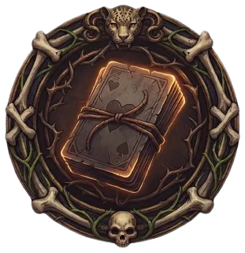

Aspetta qualche secondo...
Riguarda il tavolo: fruscio delle carte, colpi e magie. Non sono file scaricati, si costruiscono mentre giochi.
Cambia la lingua delle carte, nella scelta del mazzo. Il resto del gioco per ora resta in italiano.
Verde chiaro è sempre disponibile. Gli altri si sbloccano avanzando nel pass stagionale.
Rifai da capo la visita guidata a negozio, album e scelta del mazzo — senza toccare le tue carte o i tuoi sharkini.
Guadagni punti giocando partite vere — con un amico, una Partita random, o la Missione del giorno — non contano le partite contro il PC in locale.
Ogni 100 punti avanzi di una tappa. Solo chi è registrato accumula punti. Ogni stagione dura 14 giorni: poi si azzera da sola e ne comincia una nuova, con la sua tabella di premi.




